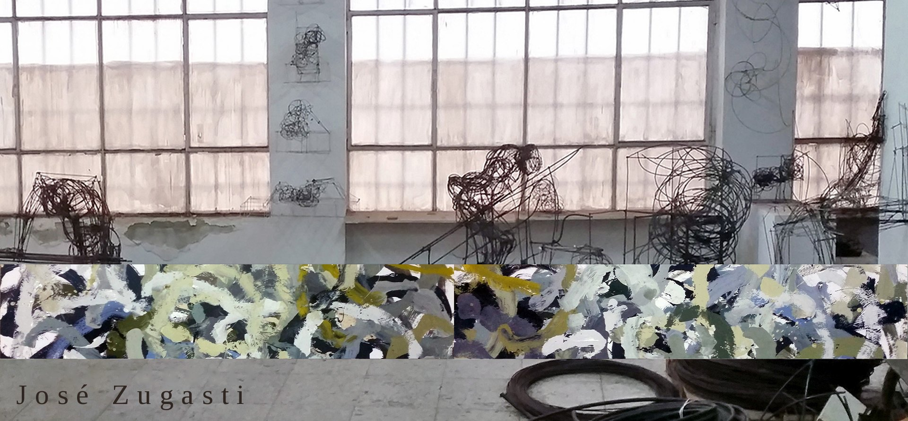

07 · Canal YouTube
Canal de YouTube


José Zugasti Arizmendiarrieta
@josezugastiarizmendiarrieta
Entrevistas, exposiciones y vídeos sobre la vida y la obra de José Zugasti.


Entrevistas, exposiciones y vídeos sobre la vida y la obra de José Zugasti.
Para consultas sobre la obra, cesiones, exposiciones o archivo, contactar por los siguientes canales.